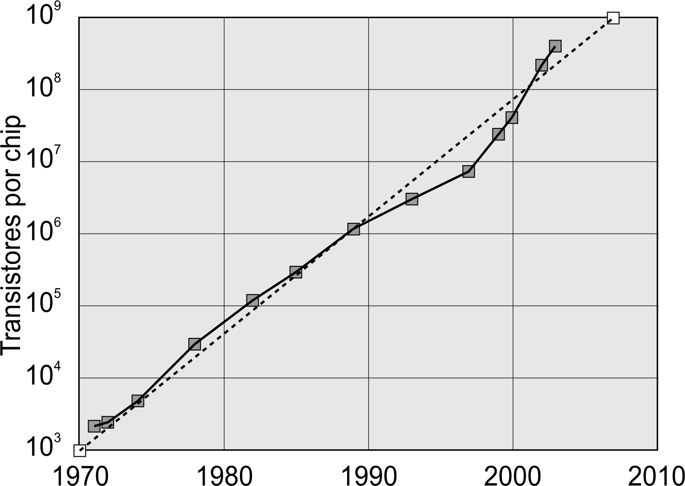

Até meados de 1965 não havia nenhuma previsão real sobre o futuro do hardware, quando Gordon E. Moore fez sua profecia, na qual o número de transistores dos chips teria um aumento de 100%, pelo mesmo custo, a cada período de 18 meses. Essa profecia tornou-se realidade e acabou ganhando o nome de Lei de Moore.
Evolução da Quantidade de Transistores
O primeiro a arriscar uma teoria evolucionista a respeito de hardware foi Alan Turing em 1950, prevendo que na virada do século teríamos computadores com memória na casa de 1 GB. Quinze anos depois dessa afirmação, em um artigo de cunho científico na revista Eletronic Magazine de 19 de abril de 1965, Gordon Moore fez a seguinte citação:
A complexidade para componentes com custos mínimos tem aumentado em uma taxa de aproximadamente um fator de dois por ano... Certamente em um curto prazo pode-se esperar que esta taxa se mantenha, se não aumentar. A longo prazo, a taxa de aumento é um pouco mais incerta, embora não haja razões para se acreditar que ela não se manterá quase constante por pelo menos 10 anos. Isso significa que em torno de 1975, o número de componentes por circuito integrado para um custo mínimo será 65.000 (65nM). Eu acredito que circuitos grandes como este poderão ser construídos em um único componente (pastilha)[1].
Segundo Carl Anderson, pesquisador da área de concepção de computadores da IBM, a Lei de Moore pode estar chegando ao fim. Entre os motivos para que Anderson faça tal previsão está o fato de que os engenheiros estão desenvolvendo sistemas que exigem menos recursos do processador e os custos para pesquisas de novos processadores estão cada vez mais altos. Além do fato de que, com o aumento da velocidade, aumenta também o consumo de energia e a dissipação de calor.